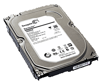
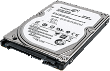
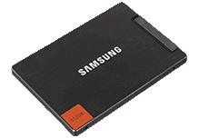

What is a HDD?
A hard disk drive (HDD) is basically a storage device in a computer.
It is comprised of multiple metal platters with magnetic coating, spindle, and various moving parts to process and store data.
Think of a record player or CD. Platters in a HDD could equate to the record of a record player or a disc to a CD player.
This means a HDD is comprised of moving parts, which is why they can fail easily if dropped. It also means that data can be recovered from using simple tools such as "Recuva".
The common size for laptop hard drives is the 2.5” model, while a larger 3.5” variant is usually found in desktop computers, see the table below.
What is an SDD?
A solid state drive (SSD) is also another type of data storage that performs the same job as an HDD.
But instead of storing data in a magnetic coating on top of platters, an SSD uses flash memory chips and an embedded processor to store, retrieve, and cache data.
It is roughly about the same size as a typical HDD, and bears the resemblance of what smartphone batteries would look like.
An SSD has no moving parts which means it is faster than a HDD and cannot be damaged from vibrations or a small drop from your hands to the table.
| HDD Type |
Image |
Speed |
| 3.5" HDD 5400 RPM |
 |
Slow |
| 2.5" HDD 7200 RPM |
 |
Less slow |
| 2.5" SSD |
 |
Fast |
Here's a graph of the average capacity of HDD's over the years. As you can see, in the 30 years shown on the graph, we've went from less than 1GB all the way to 1000GB, or 1TB.
Although this graph is missing 10 years of data, since then, HDD's with capacities up to 14TB, that's 14000GB have been manufactured. Many of these drives in one system allows for more than 50,000GB in one system alone!